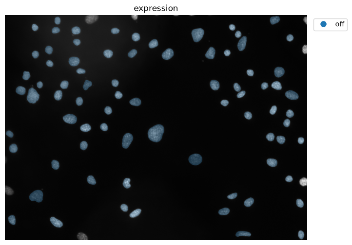
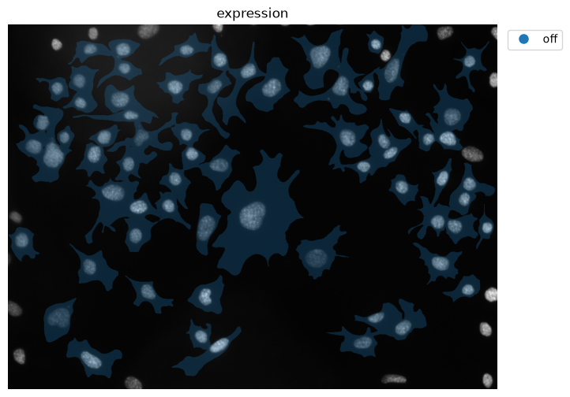
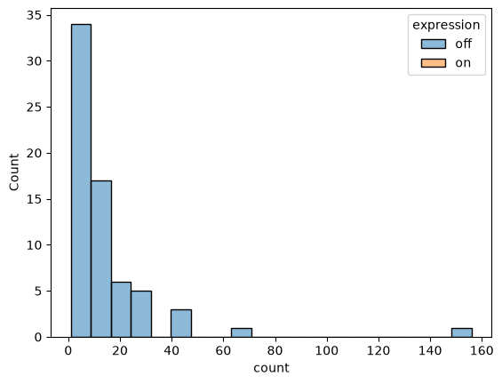
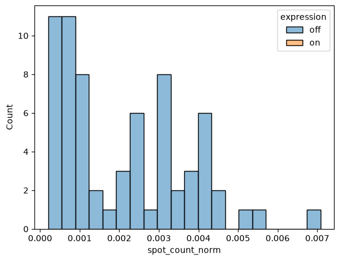

Nested Measurements#
# /// script
# requires-python = ">=3.10"
# dependencies = [
# "matplotlib",
# "numpy",
# "scikit-image",
# "scipy",
# "tifffile",
# "imagecodecs",
# "pandas",
# "seaborn",
# "bobiac_tools @ git+https://github.com/bobiac/bobiac-tools.git"
# ]
# ///
Overview#
In this notebook, we will address a common task in image analysis: Relating measurements of nested objects, I.e., measuring objects that are contained within larger scale objects and connecting those. For example, measuring the expression of a nuclear marker and relating that to cell size.
Here, we have cells that express two markers:
A nuclear marker that is either on or off depending on cell state.
A marker in the cytoplasm that exhibits spots. Our question is: Do cells that are in the nuclear on state exhibit more spots in the cytoplasm?
To answer this question we will:
Load images and masks (for cells, nuclei and spots (spots are stored in a list of coordinates))
Use the nuclear masks to classify nuclei as on or off
Relate this state to the corresponding cell.
Identify which spots belong to which cells.
Count the number of spots per cell.
Set up a batch processing loop for all fields of view.
Plot results and draw conclusions.
We will not be introducing new tools and will focus on using the tools we learned in the previous notebook.
Import libraries#
from pathlib import Path
import matplotlib.pyplot as plt
import numpy as np
import pandas as pd
import seaborn as sns
import skimage
import tifffile
from bobiac_tools import overlay_labels
Load one image and masks#
First, we load one image and the corresponding label masks of the cells, nuclei, and spots.
Note that the image is a multi-channel image, therefore we will need to extract the channels that we are interested in. In this case, we are interested in the nuclear channel and the spots channel.
As before, we run through the whole analysis pipeline on this small dataset before we set up batch processing in the end.
# define file paths
image_path = Path(
"../../_static/images/quant/02_nested_measurements/images/F01_837.tif"
)
mask_cell_path = Path(
"../../_static/images/quant/02_nested_measurements/masks/F01_837w1.TIF"
)
mask_nucleus_path = Path(
"../../_static/images/quant/02_nested_measurements/masks/F01_837w2.TIF"
)
segmentation_spots_path = Path(
"../../_static/images/quant/02_nested_measurements/spot_lists/F01_837_spots.csv"
)
# load images and masks
image = tifffile.imread(image_path)
image_nuclear = image[0]
image_spots = image[2]
mask_cell = tifffile.imread(mask_cell_path)
mask_nucleus = tifffile.imread(mask_nucleus_path)
# remove boundary objects
mask_cell = skimage.segmentation.clear_border(mask_cell)
mask_nucleus = skimage.segmentation.clear_border(mask_nucleus)
# load segmented spots
df_spots = pd.read_csv(segmentation_spots_path)
overlay_labels(image=[image_nuclear, image_spots])

(<Figure size 800x800 with 1 Axes>, <Axes: >)
print(df_spots[["y", "x"]])
y x
0 92 136
1 37 125
2 86 140
3 43 121
4 52 154
... ... ...
1173 1036 1161
1174 1026 1187
1175 1019 1197
1176 1010 509
1177 1010 472
[1178 rows x 2 columns]
overlay_labels(
label_mask=[mask_cell, mask_nucleus], coordinates=df_spots[["y", "x"]].to_numpy()
)

(<Figure size 800x800 with 1 Axes>, <Axes: >)
overlay_labels(label_mask=mask_cell)

(<Figure size 800x800 with 1 Axes>,
<Axes: title={'center': 'Segmentation overlay'}>)
overlay_labels(label_mask=mask_nucleus)

(<Figure size 800x800 with 1 Axes>,
<Axes: title={'center': 'Segmentation overlay'}>)
Create DataFrame for cells#
First, we generate a dataframe that contains all cells. We do this using the regionprops_table function.
properties = ["area", "label"]
props = skimage.measure.regionprops_table(mask_cell, properties=properties)
df_cell = pd.DataFrame(props)
print(df_cell)
area label
0 1835.0 10
1 2252.0 11
2 11083.0 12
3 11811.0 13
4 2201.0 14
.. ... ...
65 3711.0 83
66 6932.0 84
67 6111.0 85
68 9146.0 88
69 3786.0 89
[70 rows x 2 columns]
That was simple. This table now contains all labels of the cells.
Classify nuclei#
Now, we classify the each nucleus’ expression levels of the nuclear marker into on and off.
For that we use the label mask of the nuclei, the nuclear expression image and the regionpros_table function.
Measure properties#
properties = ["area", "intensity_mean", "label"]
props = skimage.measure.regionprops_table(
mask_nucleus, intensity_image=image_nuclear, properties=properties
)
df_nuc = pd.DataFrame(props)
print(df_nuc)
area intensity_mean label
0 1377.0 1190.348584 6
1 796.0 1762.503769 8
2 744.0 2053.278226 9
3 643.0 2353.867807 10
4 1222.0 1984.824877 11
.. ... ... ...
72 1372.0 2598.682945 83
73 1219.0 1351.519278 84
74 1872.0 1978.978098 85
75 868.0 2060.660138 86
76 1472.0 1160.914402 87
[77 rows x 3 columns]
Let’s add an image_id for book keeping.
df_nuc["image_id"] = image_path.stem.split("_ch")[0]
print(df_nuc)
area intensity_mean label image_id
0 1377.0 1190.348584 6 F01_837
1 796.0 1762.503769 8 F01_837
2 744.0 2053.278226 9 F01_837
3 643.0 2353.867807 10 F01_837
4 1222.0 1984.824877 11 F01_837
.. ... ... ... ...
72 1372.0 2598.682945 83 F01_837
73 1219.0 1351.519278 84 F01_837
74 1872.0 1978.978098 85 F01_837
75 868.0 2060.660138 86 F01_837
76 1472.0 1160.914402 87 F01_837
[77 rows x 4 columns]
Classify by intensity#
To understand where we should set our threshold for on / off, we can plot the intensity measurements as a histogram.
sns.histplot(
data=df_nuc,
x="intensity_mean",
bins=50,
)
<Axes: xlabel='intensity_mean', ylabel='Count'>

It seems like the expression is truly bimodal and 15,000 would be a good threshold.
Now, we classify the intensity of nuclei using the cut function as before.
df_nuc["expression"] = pd.cut(
df_nuc["intensity_mean"], bins=[0, 15000, np.inf], labels=["off", "on"]
)
print(df_nuc["expression"].unique())
['off']
Categories (2, str): ['off' < 'on']
overlay_labels(
image=image_nuclear,
label_mask=mask_nucleus,
df=df_nuc,
id_col="label",
measurement_col="expression",
)

(<Figure size 800x800 with 1 Axes>, <Axes: title={'center': 'expression'}>)
print(df_nuc)
area intensity_mean label image_id expression
0 1377.0 1190.348584 6 F01_837 off
1 796.0 1762.503769 8 F01_837 off
2 744.0 2053.278226 9 F01_837 off
3 643.0 2353.867807 10 F01_837 off
4 1222.0 1984.824877 11 F01_837 off
.. ... ... ... ... ...
72 1372.0 2598.682945 83 F01_837 off
73 1219.0 1351.519278 84 F01_837 off
74 1872.0 1978.978098 85 F01_837 off
75 868.0 2060.660138 86 F01_837 off
76 1472.0 1160.914402 87 F01_837 off
[77 rows x 5 columns]
Great! Now we have a DataFrame where each nucleus is classified as expressing or non-expressing.
Connecting the DataFrames#
We now have three DataFrames:
df_cellstores information about the cells, like their area and labeldf_nucstores information about the nuclei, including the expression statusdf_spotsstores the coordinates of the spots
We want to connect information about the nucleus (on/off) with information about the spots (how many/per cell). Both of these are properties of the cell, which makes it our central object. Another way of looking at this is that the cell is the unifying object that contains both the nucleus (and its expression state) and all the dots. Dots and nuclei are not directly connected.
Practically, this means we need to create two columns in df_cell:
nuclear_expression: that maps the expression classification of the nucleus to the cellnumber_of_spots: that contains how many spots exist in each cell
Map nuclear expression#
To map the expression of the nuclei to the cells, we need to know which nuclear label corresponds to which cell label. As we can see below, they are not identical.
overlay_labels(label_mask=mask_cell)
(<Figure size 800x800 with 1 Axes>,
<Axes: title={'center': 'Segmentation overlay'}>)
overlay_labels(label_mask=mask_nucleus)
(<Figure size 800x800 with 1 Axes>,
<Axes: title={'center': 'Segmentation overlay'}>)
We can use regionprops_table to measure identify the cell label of each nucleus.
properties = ["intensity_mean", "label"]
labels = skimage.measure.regionprops_table(
mask_nucleus, intensity_image=mask_cell, properties=properties
)
df_merge = pd.DataFrame(labels)
df_merge = df_merge.rename({"intensity_mean": "label_cell"}, axis=1)
print(df_merge)
label_cell label
0 0.0 6
1 0.0 8
2 0.0 9
3 14.0 10
4 17.0 11
.. ... ...
72 84.0 83
73 0.0 84
74 88.0 85
75 0.0 86
76 0.0 87
[77 rows x 2 columns]
df_nuc = df_nuc.merge(df_merge, on="label", how="left")
print(df_nuc)
area intensity_mean label image_id expression label_cell
0 1377.0 1190.348584 6 F01_837 off 0.0
1 796.0 1762.503769 8 F01_837 off 0.0
2 744.0 2053.278226 9 F01_837 off 0.0
3 643.0 2353.867807 10 F01_837 off 14.0
4 1222.0 1984.824877 11 F01_837 off 17.0
.. ... ... ... ... ... ...
72 1372.0 2598.682945 83 F01_837 off 84.0
73 1219.0 1351.519278 84 F01_837 off 0.0
74 1872.0 1978.978098 85 F01_837 off 88.0
75 868.0 2060.660138 86 F01_837 off 0.0
76 1472.0 1160.914402 87 F01_837 off 0.0
[77 rows x 6 columns]
mapping = df_nuc.loc[df_nuc["label_cell"] != 0].drop_duplicates(
"label_cell", keep=False
)[["label_cell", "expression"]]
mapping
| label_cell | expression | |
|---|---|---|
| 3 | 14.0 | off |
| 4 | 17.0 | off |
| 5 | 18.0 | off |
| 6 | 15.0 | off |
| 7 | 13.0 | off |
| ... | ... | ... |
| 68 | 80.0 | off |
| 70 | 83.0 | off |
| 71 | 85.0 | off |
| 72 | 84.0 | off |
| 74 | 88.0 | off |
67 rows × 2 columns
df_cell = df_cell.merge(
mapping, left_on="label", right_on="label_cell", how="inner"
).drop(columns="label_cell")
print(df_cell)
area label expression
0 11083.0 12 off
1 11811.0 13 off
2 2201.0 14 off
3 4385.0 15 off
4 3136.0 16 off
.. ... ... ...
62 5343.0 81 off
63 3711.0 83 off
64 6932.0 84 off
65 6111.0 85 off
66 9146.0 88 off
[67 rows x 3 columns]
overlay_labels(
image=image_nuclear,
label_mask=mask_cell,
df=df_cell,
id_col="label",
measurement_col="expression",
)

(<Figure size 800x800 with 1 Axes>, <Axes: title={'center': 'expression'}>)
Map spot count#
Now we applyt the same strategy to map the number of spots to df_cell.
Per spot, identify which cell it belongs to
Count the number of spots per cell
Add that information to the cell dataframe
overlay_labels(label_mask=mask_cell, coordinates=df_spots[["y", "x"]].to_numpy())

(<Figure size 800x800 with 1 Axes>,
<Axes: title={'center': 'Segmentation overlay'}>)
For each spot in df_spots we look up the cell label in mask_cell.
df_spots["label_cell"] = mask_cell[df_spots["y"].astype(int), df_spots["x"].astype(int)]
print(df_spots["label_cell"].unique())
[ 0 10 11 12 13 14 15 16 17 18 19 20 21 22 23 24 25 26 28 29 30 31 32 34
35 36 37 38 39 40 41 42 43 44 45 46 47 49 50 51 52 53 54 55 56 57 58 59
60 61 62 63 64 65 67 68 69 70 71 72 75 76 77 79 80 81 83 84 85 88 89]
Now we count the number of spots per cell_label.
sns.histplot(data=df_spots, x="label_cell", bins=len(df_spots["label_cell"].unique()))
<Axes: xlabel='label_cell', ylabel='Count'>

Remove spots with cell_label == 0. Those spots are outside of valid cells.
df_spots = df_spots.loc[df_spots["label_cell"] != 0]
print(df_spots)
channel y x label_cell
98 1 2 691 10
99 1 33 664 10
100 1 10 710 10
101 1 19 791 11
102 1 16 799 11
... ... ... ... ...
1143 1 1003 288 88
1144 1 1008 288 88
1145 1 1006 154 89
1146 1 1017 140 89
1147 1 992 119 89
[984 rows x 4 columns]
Now we count the spots per cell, I.e., per unique label_cell.
mapping = df_spots["label_cell"].value_counts().reset_index()
print(mapping)
label_cell count
0 53 156
1 13 65
2 62 44
3 69 44
4 22 43
.. ... ...
65 25 1
66 41 1
67 46 1
68 47 1
69 49 1
[70 rows x 2 columns]
Now we merge these measurements with df_cell.
df_cell = df_cell.merge(
mapping, left_on="label", right_on="label_cell", how="inner"
).drop(columns="label_cell")
print(df_cell)
area label expression count
0 11083.0 12 off 6
1 11811.0 13 off 65
2 2201.0 14 off 1
3 4385.0 15 off 5
4 3136.0 16 off 6
.. ... ... ... ...
62 5343.0 81 off 3
63 3711.0 83 off 4
64 6932.0 84 off 5
65 6111.0 85 off 21
66 9146.0 88 off 13
[67 rows x 4 columns]
sns.histplot(
data=df_cell,
x="count",
bins=20,
hue="expression",
)
<Axes: xlabel='count', ylabel='Count'>

overlay_labels(
image=image_nuclear,
label_mask=mask_cell,
df=df_cell,
id_col="label",
measurement_col="count",
)

(<Figure size 800x800 with 2 Axes>, <Axes: title={'center': 'count'}>)
Normalisation#
We can see from the overlay above that the largest cell also has the most spots. This might be a case of size and number of spots being confunding variables; larger cells have more space and therefore more spots. Let’s normalise the spot count by area.
df_cell["spot_count_norm"] = df_cell["count"] / df_cell["area"]
print(df_cell["spot_count_norm"])
0 0.000541
1 0.005503
2 0.000454
3 0.001140
4 0.001913
...
62 0.000561
63 0.001078
64 0.000721
65 0.003436
66 0.001421
Name: spot_count_norm, Length: 67, dtype: float64
overlay_labels(
image=image_nuclear,
label_mask=mask_cell,
df=df_cell,
id_col="label",
measurement_col="spot_count_norm",
)

(<Figure size 800x800 with 2 Axes>,
<Axes: title={'center': 'spot_count_norm'}>)
sns.histplot(data=df_cell, x="spot_count_norm", bins=20, hue="expression")
<Axes: xlabel='spot_count_norm', ylabel='Count'>

The picture is much clearer now.
Batch processing#
Now we set up batch processing to analyse all the images in the folder.
image_folder = Path("../../_static/images/quant/02_nested_measurements/images/")
mask_folder = Path("../../_static/images/quant/02_nested_measurements/masks/")
spot_folder = Path("../../_static/images/quant/02_nested_measurements/spot_lists/")
nuclear_images = sorted(image_folder.glob("*_ch0_nuclear.tif"))
list_df = []
for nuclear_path in nuclear_images:
image_id = nuclear_path.stem.split("_ch")[0] # e.g. F01_837
# load images, masks, and spot coordinates
image_nuclear = tifffile.imread(nuclear_path)
mask_cell = tifffile.imread(mask_folder / f"{image_id}w1.TIF")
mask_nucleus = tifffile.imread(mask_folder / f"{image_id}w2.TIF")
df_spots = pd.read_csv(spot_folder / f"{image_id}_spots.csv")
# remove objects touching the border
mask_cell = skimage.segmentation.clear_border(mask_cell)
mask_nucleus = skimage.segmentation.clear_border(mask_nucleus)
# --- cell dataframe ---
df_cell = pd.DataFrame(
skimage.measure.regionprops_table(mask_cell, properties=["area", "label"])
)
# --- nucleus dataframe: measure and classify expression ---
df_nuc = pd.DataFrame(
skimage.measure.regionprops_table(
mask_nucleus,
intensity_image=image_nuclear,
properties=["area", "intensity_mean", "label"],
)
)
df_nuc["image_id"] = image_id
df_nuc["expression"] = pd.cut(
df_nuc["intensity_mean"], bins=[0, 15000, np.inf], labels=["off", "on"]
)
# --- map each nucleus to the cell it sits in ---
df_merge = pd.DataFrame(
skimage.measure.regionprops_table(
mask_nucleus,
intensity_image=mask_cell,
properties=["intensity_mean", "label"],
)
).rename(columns={"intensity_mean": "label_cell"})
df_nuc = df_nuc.merge(df_merge, on="label", how="left")
mapping_expr = df_nuc[df_nuc["label_cell"] != 0].drop_duplicates(
"label_cell", keep=False
)[["label_cell", "expression"]]
df_cell = df_cell.merge(
mapping_expr, left_on="label", right_on="label_cell", how="inner"
).drop(columns="label_cell")
# --- count spots per cell ---
df_spots["label_cell"] = mask_cell[
df_spots["y"].astype(int), df_spots["x"].astype(int)
]
df_spots = df_spots.loc[df_spots["label_cell"] != 0]
mapping_spots = df_spots["label_cell"].value_counts().reset_index()
df_cell = df_cell.merge(
mapping_spots, left_on="label", right_on="label_cell", how="inner"
).drop(columns="label_cell")
df_cell["spot_count_norm"] = df_cell["count"] / df_cell["area"]
df_cell["image_id"] = image_id
list_df.append(df_cell)
df_full = pd.concat(list_df, ignore_index=True)
---------------------------------------------------------------------------
ValueError Traceback (most recent call last)
Cell In[34], line 72
68
69 df_cell["image_id"] = image_id
70 list_df.append(df_cell)
71
---> 72 df_full = pd.concat(list_df, ignore_index=True)
File ~/work/bobiac-book/bobiac-book/.venv/lib/python3.12/site-packages/pandas/core/reshape/concat.py:407, in concat(objs, axis, join, ignore_index, keys, levels, names, verify_integrity, sort, copy)
402 else: # pragma: no cover
403 raise ValueError(
404 "Only can inner (intersect) or outer (union) join the other axis"
405 )
--> 407 objs, keys, ndims = _clean_keys_and_objs(objs, keys)
409 if sort is lib.no_default:
410 if axis == 0:
File ~/work/bobiac-book/bobiac-book/.venv/lib/python3.12/site-packages/pandas/core/reshape/concat.py:808, in _clean_keys_and_objs(objs, keys)
805 objs = list(objs)
807 if len(objs) == 0:
--> 808 raise ValueError("No objects to concatenate")
810 if keys is not None:
811 if not isinstance(keys, Index):
ValueError: No objects to concatenate
print(df_full)
df_plot = (
df_full.groupby(["expression", "image_id"])[["count", "spot_count_norm"]]
.mean()
.reset_index()
)
df_plot
sns.boxplot(
data=df_plot,
x="expression",
y="count",
)
sns.swarmplot(data=df_plot, x="expression", y="count", c="k", s=10)
plt.ylim(0)
sns.boxplot(
data=df_plot,
x="expression",
y="spot_count_norm",
)
sns.swarmplot(data=df_plot, x="expression", y="spot_count_norm", c="k", s=10)
plt.ylim(0)
Conclusion#
We successfully integrated properties of different objects with each other. Handling these sort of nested measurements is a key aspect of analysing images.